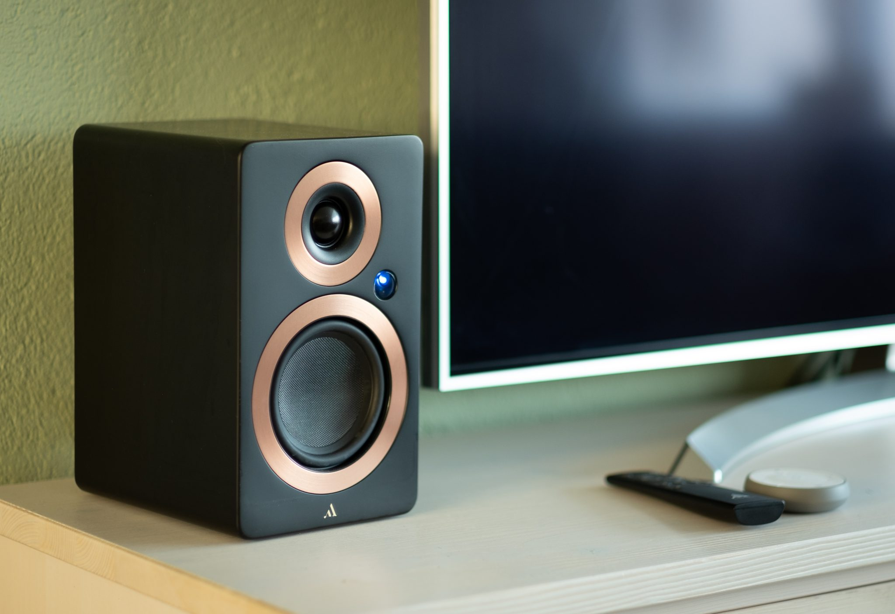
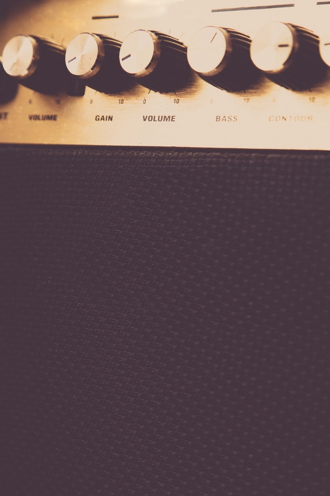
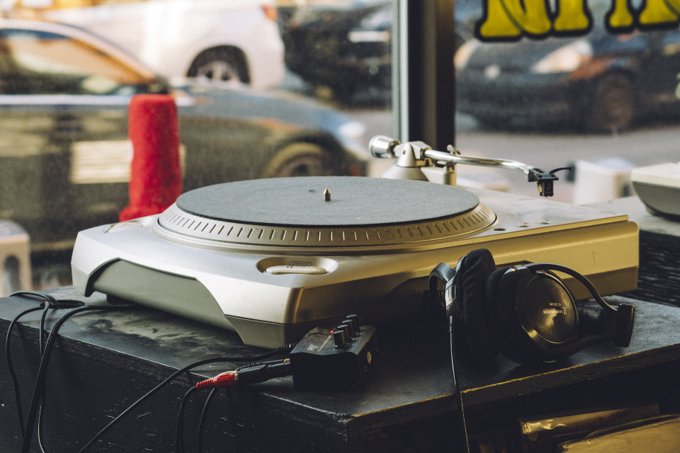
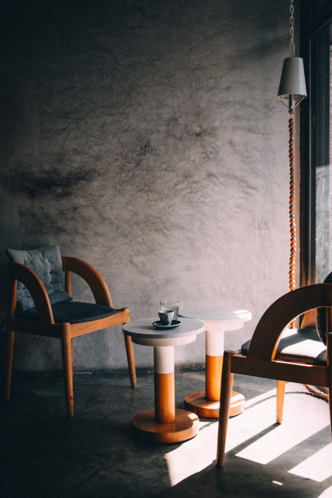

アルテックのスピーカーやマッキントッシュのアンプなど、オーディオマニアが喜びそうなシステムが鎮座しています。出先で立ち寄られたお客様
Audio & Vinyl
マニアも唸る、
本格オーディオシステム
この店最大の魅力は、店内に静かに据えられた本格オーディオ機材と、リクエストに応えてレコードをかけてくれる時間。オーディオ好きはもちろん、初めて触れる方にもその空気を感じていただけます。
Equipment
主要機材のご紹介

Speaker
アルテックのスピーカー
来店されたお客様から「オーディオマニアが喜びそうなシステムが鎮座している」と評された、この店の象徴ともいえる存在です。レコードに刻まれた音の輪郭を、ゆったりと鳴らしてくれます。
一部の写真はフリー素材のイメージです。実際の店内・お料理の様子は貴店ご提供のものに差し替えます

Amplifier
マッキントッシュのアンプ
ブルーに光るVUメーターが特徴的な、マッキントッシュのアンプ。音楽好きなら一度は憧れるブランドの一台が、ここでは特別な存在としてではなく、日常的に音を灯しています。
一部の写真はフリー素材のイメージです。実際の店内・お料理の様子は貴店ご提供のものに差し替えます

Turntable
Luxmanのレコードプレーヤー
ターンテーブルに静かに針を落とす瞬間。あるお客様は、店主と話す中でLuxmanのプレーヤーについて情報を教えてもらい、その足で専門店に向かい実機を購入したというエピソードも。機材そのものだけでなく、機材をめぐる会話も含めてこのコーナーの魅力です。
一部の写真はフリー素材のイメージです。実際の店内・お料理の様子は貴店ご提供のものに差し替えます
※ 型番・発売年・価格等の詳細情報は確認中のため、本サイトには記載しておりません。気になる方は店頭で店主に直接お尋ねください。
Request
あなたの一枚を、かけてもらえる
アナログCafeでは、お客様からのリクエストに応じて店主がレコードをかけてくれます。沢田研二のアルバムから、カーペンターズ、ソニー・ロリンズ、ヘレン・メリルまで。ジャンルを問わず、その日その時の空気に合わせた一枚が、店内に流れます。決まったプレイリストではなく、その場の会話から生まれる選曲。同じ時間が二度とないことも、このコーナーの楽しみ方のひとつです。
一部の写真はフリー素材のイメージです。実際の店内・お料理の様子は貴店ご提供のものに差し替えます

同じ音楽好きと出会える場所
アナログCafeは、コーヒーを飲みに来る場所であると同時に、音楽やオーディオについて語り合える場所でもあります。ある来店客は、店主とのオーディオ談議の中でLuxmanのプレーヤーの情報を教えてもらい、その日のうちに探していた一台を見つけることができたそうです。「趣味に関する情報は同じ嗜好を持つ人から得るのが大切」という声があるように、ここは単なる飲食店ではなく、音楽好き・オーディオ好きが自然と集まる場所になっています。
一部の写真はフリー素材のイメージです。実際の店内・お料理の様子は貴店ご提供のものに差し替えます
Voice
お客様の声
お気に入りのCDやレコードを聴きながら、香り高いコーヒーと美味しいホットサンドを楽しみました。オーディオを楽しみに来店されたお客様
オーナーとオーディオ談議になりアナログのロリンズやヘレン・メリルを聴かせてもらい、更には探していたLuxmanのプレーヤー情報も教えて頂き、その足で探していた一台を見つけて購入しました。趣味に関する情報は同じ嗜好を持つ人から得るのが大切ですね。オーディオ仲間の紹介で来店されたお客様